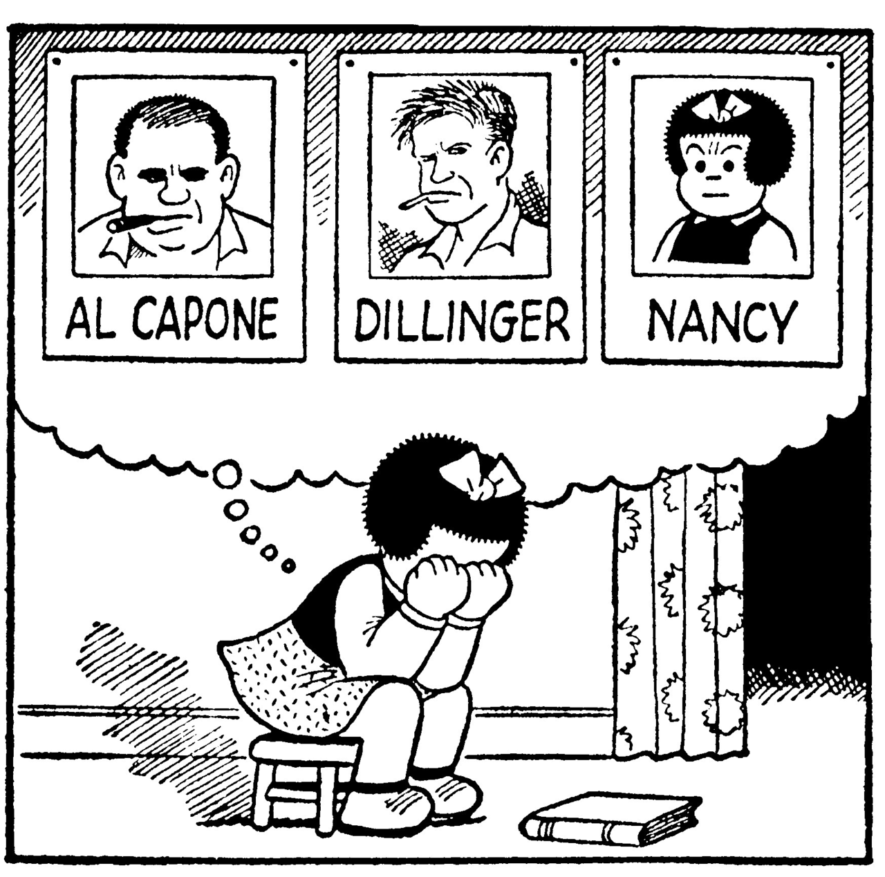

Three Programming Paradigms

| class: | fill |
|---|
| class: | fill |
|---|
- Modularity
- Composability!
- Ease of debugging and testing
- Caching
- Parallelization
procedural: list of instructions
input, output, can modify inputs
def upfile(inpath, outpath):
with open(outpath, 'w') as outf:
for line in open(inpath):
outf.write( line.upper() )
upfile('ing.txt', '/dev/stdout')
Note
[Many] Languages are procedural: programs are lists of instructions that tell the computer what to do with the program’s input.
procedural: list of instructions
object oriented: Object has state and specific functions to query/modify state. Easy to specialize by subclassing.
class Upcase(list):
def __init__(self, inpath):
super(Upcase,self).__init__(
open(inpath).readlines()
)
def writelines(self, outpath):
with open(outpath, 'w') as outf:
for line in self:
outf.write( line.upper() )
Upcase('ing.txt').writelines('/dev/stdout')
Note
Object-oriented programs manipulate collections of objects. Objects have internal state and support methods that query or modify this internal state in some way. Smalltalk and Java are object-oriented languages. C++ and Python are languages that support object-oriented programming, but don’t force the use of object-oriented features. ["Object obsessive"]
procedural: list of instructions
object oriented: object has state and specific functions to query/modify state. Easy to specialize by subclassing
functional: functions operate on streams of objects
Note
preferably without internal state
>>> print '\n'.join( (
amount(hasdata)
for hasdata in (
line for line in open('ing.txt')
if isdata(line)
)
) )
read Andy Kuchling's Functional Programming HOWTO
Note
Functional programming decomposes a problem into a set of functions. Ideally, functions only take inputs and produce outputs, and don’t have any internal state that affects the output produced for a given input.
Eliminating side effects, i.e. changes in state that do not depend on the function inputs, can make it much easier to understand and predict the behavior of a program
functional: functions operate on streams of objects
def upcase(lines):
for line in lines:
yield line.upper()
def writelines(outpath, lines):
with open(outpath, 'w') as outf:
for line in lines:
outf.write( line )
writelines( '/dev/stdout',
upcase( open('ing.txt') )
)
def upcase(lines):
# IN: stream of lines; OUT: stream of lines
for line in lines:
yield line.upper()
def writelines(outpath, lines):
# IN: stream of lines; OUT: nothing
with open(outpath, 'w') as outf:
for line in lines:
outf.write( line )
# open() is OUT: stream of lines
writelines( '/dev/stdout',
upcase( open('ing.txt') )
)
Note
Generally you'll mix these styles. IE: function that returns a stream of objects.